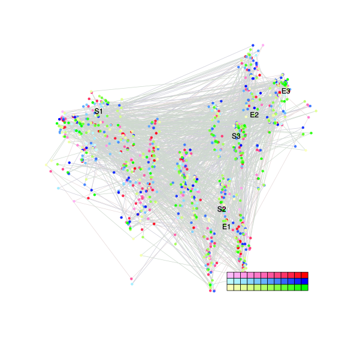
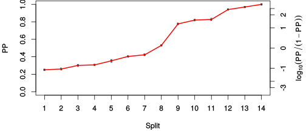
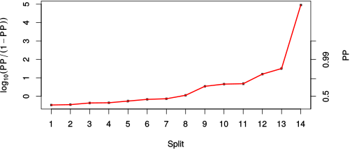

| chain # | burnin | subsample | Iterations (remaining) | command line | subdirectory | directory |
|---|---|---|---|---|---|---|
| 1 | 10000 | 1 | 90000 | /usr/local/bali-phy-3.0-beta2/bin/bali-phy E5_blue-yellow_clade_aa.fas -s 66432 -S LG -n E5_blue-yellow_aa | E5_blue-yellow_aa-1 | /home/willemse/data/trees/BaliPhy/all_E5_aa |
| 2 | 10000 | 1 | 90000 | /usr/local/bali-phy-3.0-beta2/bin/bali-phy E5_blue-yellow_clade_aa.fas -s 15423 -S LG -n E5_blue-yellow_aa | E5_blue-yellow_aa-2 | /home/willemse/data/trees/BaliPhy/all_E5_aa |
| 3 | 10000 | 1 | 90000 | /usr/local/bali-phy-3.0-beta2/bin/bali-phy E5_blue-yellow_clade_aa.fas -s 82345 -S LG -n E5_blue-yellow_aa | E5_blue-yellow_aa-3 | /home/willemse/data/trees/BaliPhy/all_E5_aa |
| P(data|M) = -1059.056 +- 0.111 | Complete sample: 7370 topologies | 95% Bayesian credible interval: 3179 topologies |
Phylogeny Distribution

| Partition support: Summary |
| Partition support graph: SVG |
{kind=link}
| 50% consensus | Newick (+PP) | SVG | |||||
| 66% consensus | Newick (+PP) | SVG | |||||
| 80% consensus | Newick (+PP) | SVG | |||||
| 90% consensus | Newick (+PP) | SVG | |||||
| 95% consensus | Newick (+PP) | SVG | |||||
| 99% consensus | Newick (+PP) | SVG | |||||
| 100% consensus | Newick (+PP) | SVG | |||||
| MAP | Newick (+PP) | SVG | |||||
| greedy | Newick (+PP) | SVG |
{kind=link}
{kind=link}
{kind=link}
{kind=link}
{kind=link}
{kind=link}
{kind=link}
{kind=link}
Alignment Distribution
Partition 1
| Diff | Min. %identity | # Sites | Constant | Informative | ||||
|---|---|---|---|---|---|---|---|---|
| Initial | FASTA | HTML | Diff | 1.98% | 101 | 1 (0.99%) | 69 (68.3%) | |
| Best (WPD) | FASTA | HTML | AU | 0.667% | 168 | 1 (0.595%) | 112 (66.7%) |
Mixing
{kind=link}
{kind=link}
| burnin (scalar) | ESS (scalar) | ESS (partition) | ASDSF | MSDSF | PSRF-CI80% | PSRF-RCF |
|---|---|---|---|---|---|---|
| 818 | 7461 | 17536.109 | 0.003 | 0.011 | 1.001 | 1.008 |
Projection of RF distances for the first 3 chains3D | Variation of split PPs across chains |
Scalar variables
| Statistic | Median | 95% BCI | ACT | ESS | burnin | PSRF-CI80% | PSRF-RCF |
|---|---|---|---|---|---|---|---|
| prior | -97.44 | (-138.6, -61.81) | 11.42 | 23641 | 249 | 1 | 1.003 |
| prior_A1 | -128 | (-165.4, -96.86) | 6.056 | 44582 | 166 | 1 | 1.003 |
| likelihood | -1046 | (-1061, -1030) | 4.405 | 61288 | 158 | 1 | 1 |
| logp | -1144 | (-1181, -1110) | 11.97 | 22559 | 346 | 1 | 1.001 |
| Heat.beta | 1 | ||||||
| Scale1 | 4.615 | (2.428, 7.578) | 1.742 | 155023 | 110 | 1 | 1.003 |
| S1.F.pi.A | 0.05596 | (0.03147, 0.08334) | 7.64 | 35342 | 467 | 0.9998 | 1.002 |
| S1.F.pi.R | 0.02418 | (0.00933, 0.04313) | 7.782 | 34696 | 818 | 0.9995 | 1.006 |
| S1.F.pi.N | 0.03637 | (0.01743, 0.05928) | 8.587 | 31443 | 417 | 1.001 | 1.001 |
| S1.F.pi.D | 0.03183 | (0.01213, 0.05618) | 9.248 | 29194 | 523 | 1 | 0.9986 |
| S1.F.pi.C | 0.07156 | (0.04133, 0.1065) | 8.277 | 32619 | 365 | 1 | 0.9931 |
| S1.F.pi.Q | 0.03738 | (0.01873, 0.05904) | 8.07 | 33457 | 630 | 0.9998 | 0.9958 |
| S1.F.pi.E | 0.04017 | (0.02002, 0.06424) | 7.993 | 33781 | 498 | 1 | 1.002 |
| S1.F.pi.G | 0.06977 | (0.03775, 0.1063) | 8.564 | 31526 | 477 | 0.9996 | 0.9983 |
| S1.F.pi.H | 0.04174 | (0.02176, 0.0664) | 7.825 | 34505 | 389 | 1 | 1.008 |
| S1.F.pi.I | 0.03117 | (0.01625, 0.04921) | 7.758 | 34803 | 350 | 1 | 1.001 |
| S1.F.pi.L | 0.1331 | (0.09662, 0.1737) | 7.692 | 35101 | 139 | 1 | 0.9992 |
| S1.F.pi.K | 0.04026 | (0.01989, 0.06417) | 7.694 | 35092 | 201 | 1 | 0.9977 |
| S1.F.pi.M | 0.02704 | (0.0129, 0.04408) | 21.4 | 12617 | 284 | 1 | 1.001 |
| S1.F.pi.F | 0.08795 | (0.05831, 0.1209) | 7.681 | 35151 | 133 | 1 | 1.001 |
| S1.F.pi.P | 0.03859 | (0.01706, 0.06457) | 7.757 | 34807 | 185 | 1 | 0.9978 |
| S1.F.pi.S | 0.04302 | (0.02263, 0.06723) | 8.053 | 33528 | 239 | 0.9994 | 1.001 |
| S1.F.pi.T | 0.04907 | (0.02677, 0.07546) | 7.398 | 36494 | 173 | 0.9999 | 1.001 |
| S1.F.pi.W | 0.02991 | (0.01224, 0.05241) | 8.541 | 31614 | 498 | 0.9997 | 1.002 |
| S1.F.pi.Y | 0.02259 | (0.009314, 0.03862) | 7.953 | 33947 | 252 | 1 | 0.9971 |
| S1.F.pi.V | 0.06842 | (0.04325, 0.097) | 7.622 | 35425 | 509 | 0.9996 | 0.9981 |
| I1.RS07.meanIndelLengthMinus1 | 5.523 | (2.163, 11.31) | 6.567 | 41116 | 192 | 0.9998 | 0.9988 |
| I1.RS07.logLambda | -3.485 | (-4.185, -2.756) | 2.899 | 93131 | 104 | 1 | 1.002 |
| |A1| | 132 | (106, 160) | 36.19 | 7460 | 364 | 0.9643 | 0.9987 |
| #indels1 | 16 | (11, 23) | 5.772 | 46778 | 114 | 0.875 | 1.002 |
| |indels1| | 119 | (73, 181) | 6.436 | 41952 | 313 | 0.9828 | 0.9976 |
| #substs1 | 151 | (126, 170) | 28.4 | 9505 | 184 | 0.9783 | 0.9979 |
| Scale1*|T| | 5.172 | (3.657, 6.907) | 4.061 | 66483 | 129 | 1 | 1.001 |
| |A| | 132 | (106, 160) | 36.19 | 7460 | 364 | 0.9643 | 0.9987 |
| #indels | 16 | (11, 23) | 5.772 | 46778 | 114 | 0.875 | 1.002 |
| |indels| | 119 | (73, 181) | 6.436 | 41952 | 313 | 0.9828 | 0.9976 |
| #substs | 151 | (126, 170) | 28.4 | 9505 | 184 | 0.9783 | 0.9979 |
| |T| | 1.126 | (0.6387, 1.718) | 1.013 | 266668 | 165 | 1 | 1 |